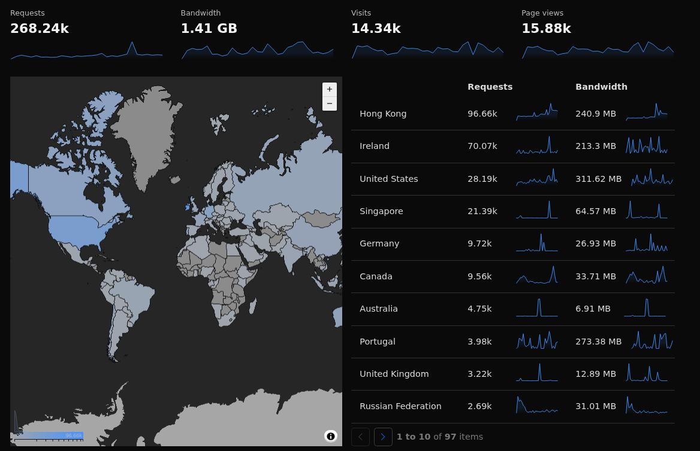

Last year, the number of visits of the main sub-domain Art grow, and for the first time I could rich Hong Kong, which in the aspect of how many visits I get per month, the number is bigger then USA, that was for long time, the first on “how many visits I have in odicforcesounds.com”.

I feel good to see this results, just because I believe that Chinese will agree about my interpretation of the 道, which I describe as The Style of God, which is all about, what we do, what we create, what we become. I become a Monkey and I do a lot of reading and writing, even if sometimes I talk alone. ;)
Ireland is as well a country that “visit a lot” this website. I think there is a Myth about Dragons in old Ireland cultures. I don’t know why, but there are a lot of cultures that like Dragons, even Japan and many others.